Getting Started
This example-driven tutorial introduces the self-service search and analysis features of Metreeca/Self. Basic familiarity with business intelligence and linked data concepts is useful, but not required.
To get started open https://demo.metreeca.com/apps/self/ with a supported web browser and connect to a SPARQL endpoint.
The tutorial refers to the https://demo.metreeca.com/sparql endpoint, which serves a semantic version of the BIRT sample dataset, cross-linked to GeoNames entities for cities and countries. The BIRT sample is a typical business database, containing tables such as offices, customers, products, orders, order lines, … for Classic Models, a fictional world-wide retailer of scale toy models.
Should you want to try out Metreeca/Self on your own datasets, make sure that your SPARQL endpoint fully supports CORS requests and review data usability guidelines.
You may also try out Metreeca/Self on DBpedia and other LOD endpoints: if you feel like, have a look at https://www.metreeca.com/demos.
The demo server is hosted on a cloud service: it is not expected to provide production-level performance and may experience some delays during on-demand workspace initialization.
Connecting to an Endpoint
Enter the URL of the endpoint (https://demo.metreeca.com/sparql) in the base field of the report info dialog (or just click the link if you feel lazy ;-): subsequent queries will automatically configure themselves with the least recently used endpoint.

To connect to a different endpoint, click on the Connect To… command in the Manage menu of the toolbar.

Opening a Collection

Fields and Facets
Adding Fields

Adding Facets
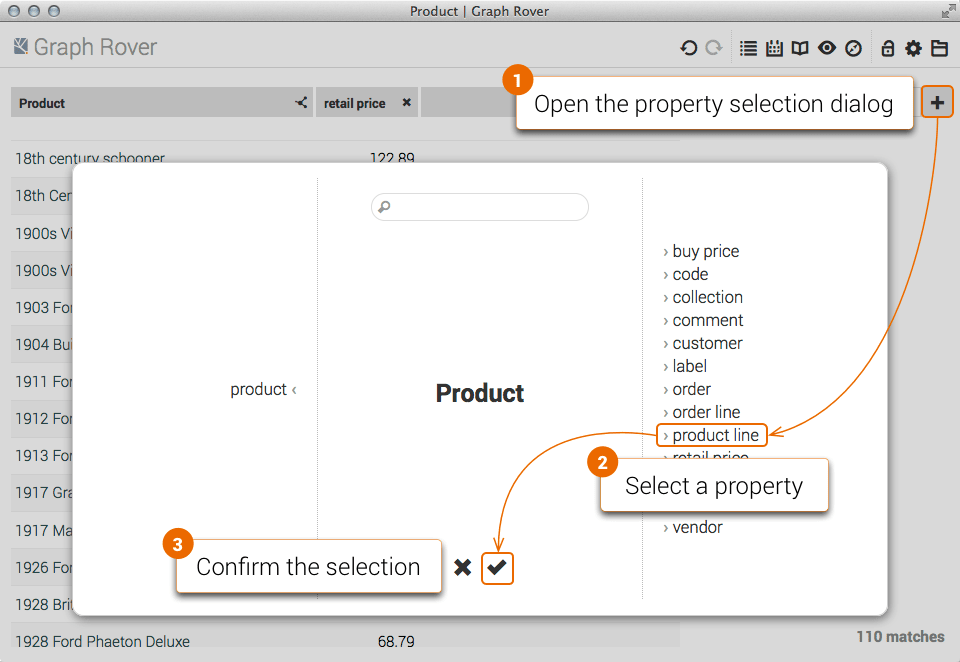
Turning Fields into Facets
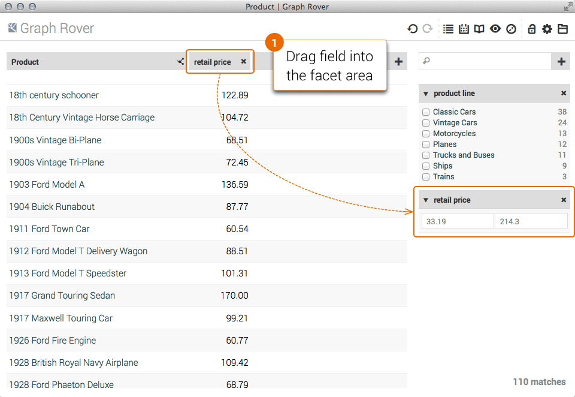
Filtering Matches
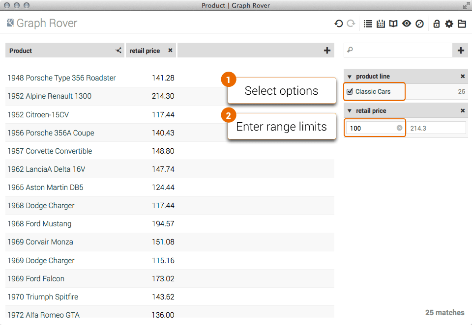
As you enter constraints, the other facets automatically update their values to show the available options and the current range.
Sorting Fields
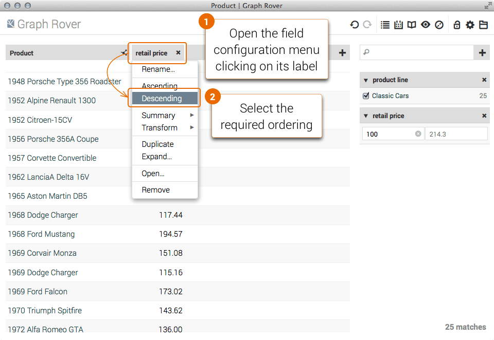
Turning Facets into Fields
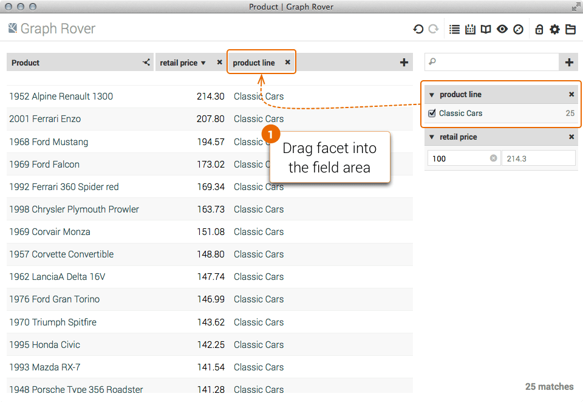
Rearranging Fields and Facets
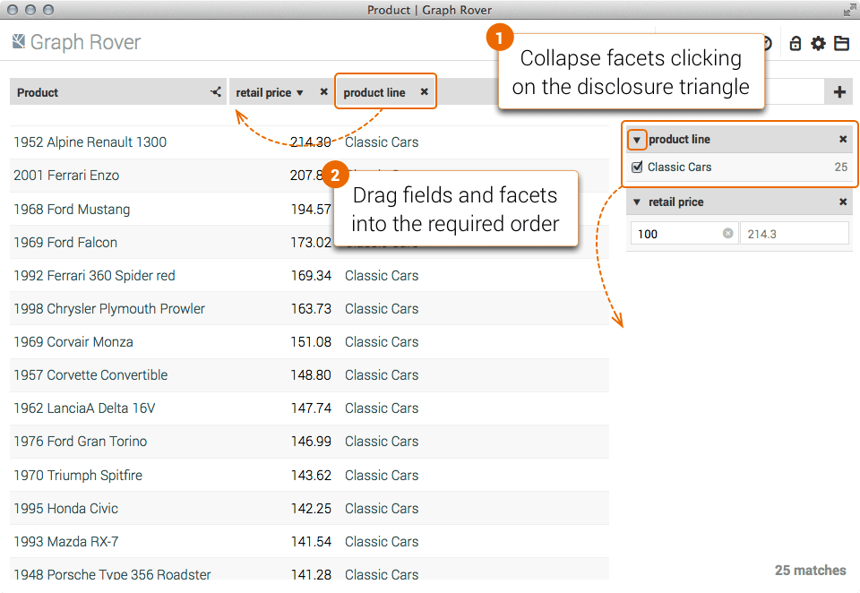
Linked Data Navigation
Browsing Linked Resources
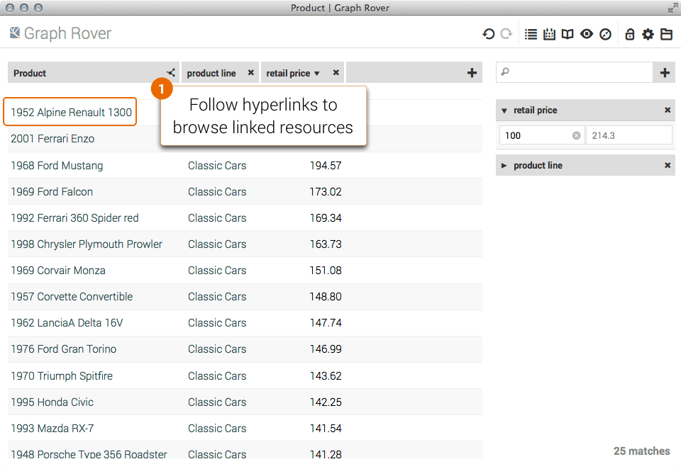
Browsing Linked Resource Sets

Set-Based Navigation
Opening a Related Set

Traversing Graph Paths
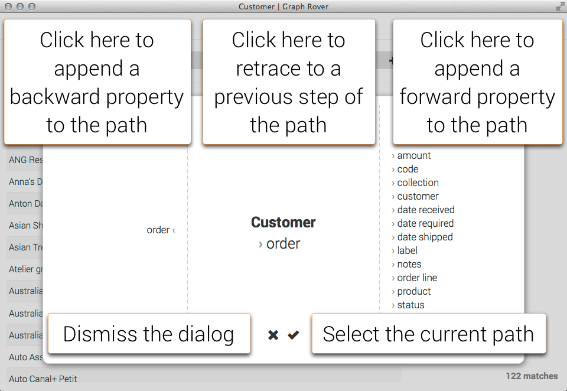 In the most general case, fields, facets and related sets are defined by property paths, defined from a starting set using the property selection dialog. The selection interface is divided into three sections:
- middle › starting set and properties included in the current path;
- right › forward properties that may be appended to the current path;
- left › backward properties that may be appended to the current path.
As you append properties to the path, panels are updated to show the current selection and available further steps.

Summaries and Transforms
Summarizing Values

Transforming Values

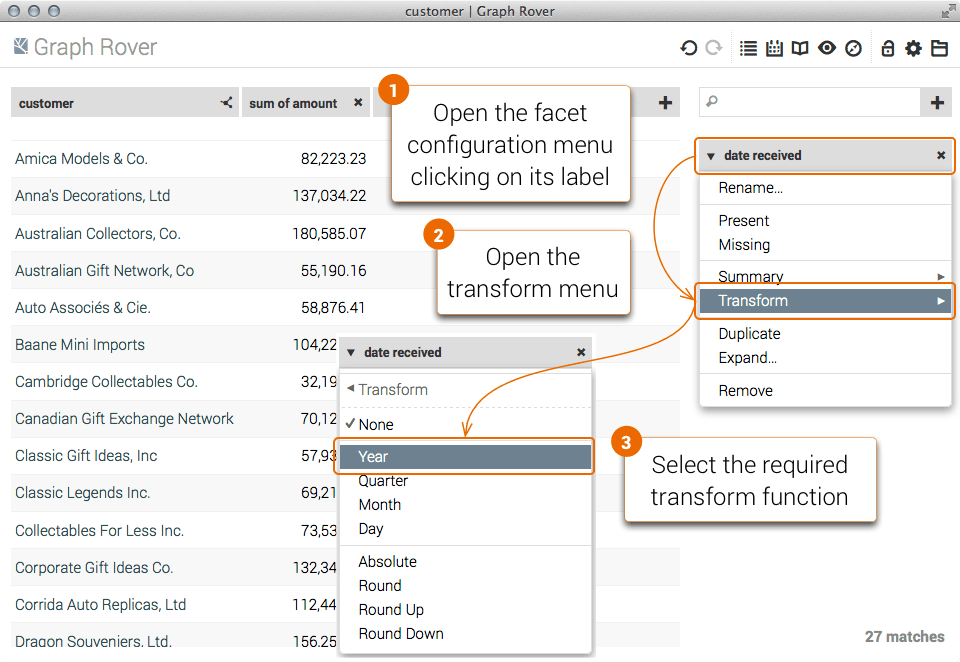
Working with Computed Values

Charts and Maps
Visualizing Sets as Charts

Configuring Charts
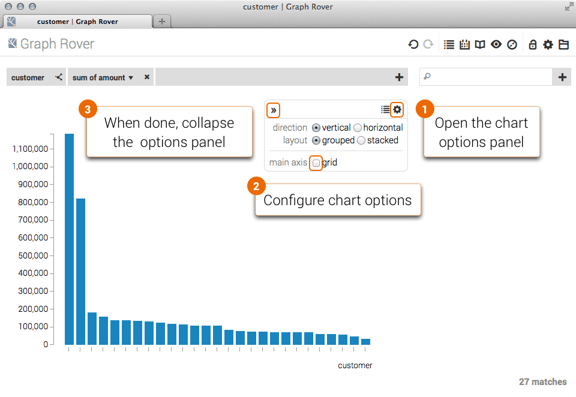
Visualizing Sets on Maps

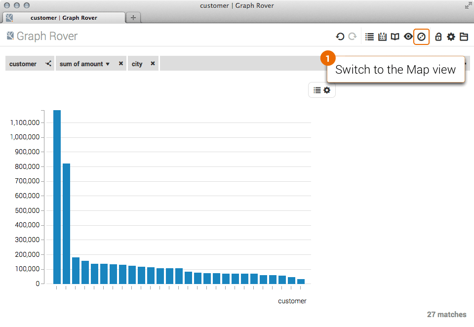
Managing Data Series
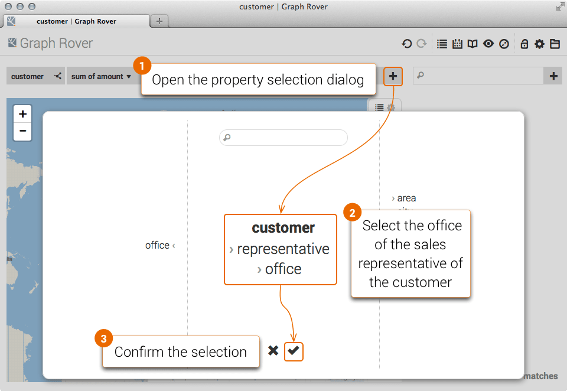
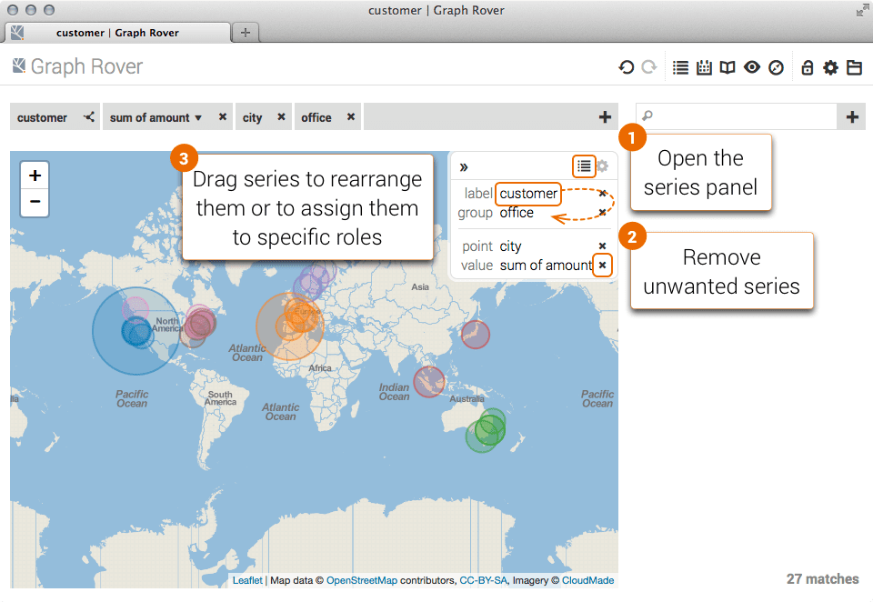

Exploring Chart Items

Browsing History
Linked Data and set-based navigation is recorded in the browser history.
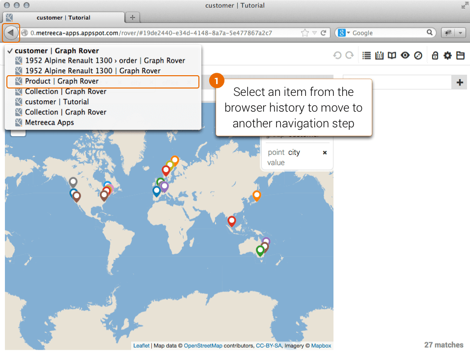
Managing Reports
Reports are persistently archived on your PC using the local storage provided by the browser.
Saving Reports

Exporting Reports

Locking Reports
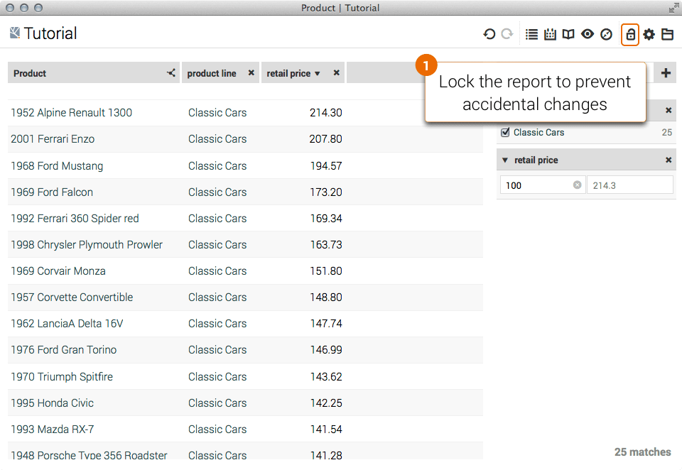
Exporting Data
Exporting Tables

Note that some versions of Excel won't correctly open the exported CSV file: if this is the case, import it manually from Excel Data menu.